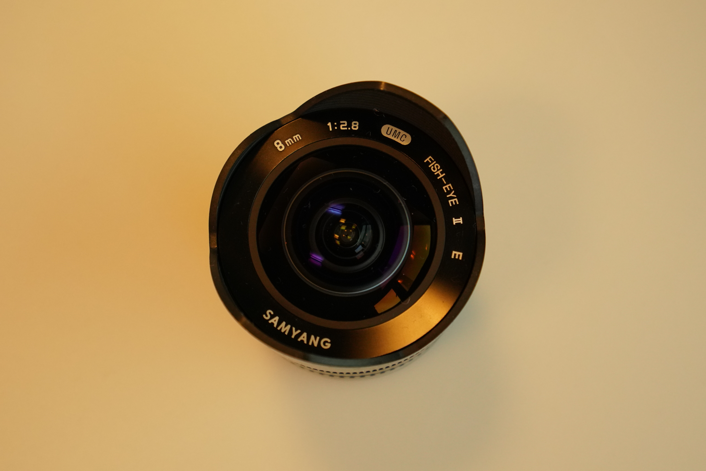

Lenses
Obviously optics plays a major role in the field of photography. Even the cheapest of cameras needs some sort of lens. On the point-and-shoot camera, the lens be integrated and therefore not replaceable, but in the middle and high end of the consumer level cameras as well as for professional cameras, the lens can be removed and replaced. There are a myriad of lenses and they come in all price ranges. But generally speaking there are two types of lenses: Prime lenses and Zoom lenses.
Prime lenses
A prime lens is a lens with a fixed focal length. This means, that if the photographer want to get closer to the subject, he or she will have to walk that distance. The main advantage of prime lenses is that they will often be sharper and faster than zoom lenses. Being faster means that the lens can open up wider thus being able to let enough light pass through to the chip even in low light conditions. In photography the focal length considered the natural distance is called 50mm for a full frame sensor. You’ll therefore often see consumer level cameras being sold with such a lens. Prime lenses do come in different sizes though, and a 90 or 105mm tele lens is quite normal in many photographers kit. They can be great for portrait or macro photography. Some lenses will be wide angle lenses and typically you’d find them in something close to 35mm or 24mm. The most extreme version of this is the so-called “fisheye” lens. Its focal length is so short that it covers close to a 180 degrees. Naturally this will distort the image proportions radically.
Zoom lenses
A zoom lens has the ability to change the focal length by turning the zoom ring. This means that the photographer can get closer to or move away from the subject without physically moving. This is of course great in many situations. The disadvantage will be that the lens can require considerably more light and it might be less sharp. So good zoom lenses are more expensive. Zoom lenses come in ranges that shows their outer focal lengths. A 16-35mm lens would thus have its shortest focal length at 16mm (a significant wide angle) and its longest at 35mm, which is a slight wide angle - convenient for indoor photography or city landscapes and architecture. On the other hand a 70-300mm lens would be a slight tele (70mm) to a strong tele (300mm). Such a lens will often require more light and images can suffer from blur due to shaking, so tripods are needed, but they can be great for nature photography, where the motive is still and a fixed camera is no problem. If the zoom is fast enough or the environment well lit, they are also great for wildlife photography.

The f-stop
The unit for how wide a lens can open up for light - i.e. how fast it is - is the f-stop. F-stops typically range from f/1.8 for fast lenses to f/22. The bigger the number the less light is let through the lens. This is because it is to be understand as a fraction. Read it “f over 1.8” and “f over 22” and it becomes clear, that f/22 is the smaller of the two. The more light the lens lets in, the more it also is able to focus on a precise point. This affects the depth of field so that with a high aperture number like f/1.8 the background will be out of focus, whereas with lower numbers the depth of field becomes wider allowing for backgrounds that are quite sharp.